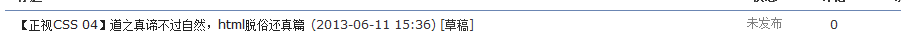
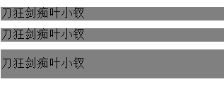
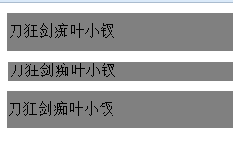
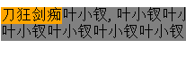

前言
我的记忆力不行，所以会花很多时间研究相同的事物，这不我又来了。
我研究CSS有一段时间了，却无情的发现一个事实，学的越多，懂的越少，卑微的人类啊！
回想我几次看CSS权威指南，第一次草草而过毫无所获，第二次醍醐灌顶，第三次迷迷糊糊鲜有所得，第四次却变得疑惑了！
当你发现你将书翻来翻去找不到答案时候，那就是一个恐怖的开始！事实上无论js或者CSS或者其它慢慢的找不到答案了。。。
比如，其实此文其实应该叫CSS04的，怎么变为05了呢？因为04的名字叫做：

我当时准备做个什么来着呢？我想知道我们的常用表情在不具有CSS时候的表现，比如ul的margin与padding，比如h1的字体大小，他的margin，比如dl的表现又是怎么样的。。。。。。。
最后我我思考了很久后发现，什么也写不出来，于是我睡着了。。。下午郁闷的看了“三傻大闹宝莱坞”话说确实不错啊！
然后就到了此时此刻了，于是我开始思考，我错过了什么吗？各位，你们错过了什么吗？？？？
我错过了什么
这个问题看似深奥，其实简单：我错过了精彩的产品！
没错，我错过了精彩的前端项目，说实话，就学习而言，我还是比较用功的，会产生记不住的原因只有两个：
1 我智商低
2 我用的少
我当然不会承认我智商低，于是我只能承认我前端项目不足的事实了，这里说的经验不足倒不是说做的不够（事实上我前端经验还真不够），更重要的是在布局过程中缺少思考！
我们在布局过程中或多或少的都会碰到一些问题，我们总会找各种各样的方案将它解决，但是却由于种种原因放弃去追寻他真正的原理！
因为真相是昂贵的，要追寻一个真相比完成一个功能难10倍以上，所以我们会放弃追寻。
所以上面的答案是错误的，真正的答案是：
前端项目经验不足，或者机械式的工作，没有了追寻真相的热情。
虽然自己平时碰到一个问题就会做一个demo，但还是缺少大项目的洗礼，比如一个电商项目，比如一个sns项目，这个就是我所需要的，这个也是我现在饥渴的想要的东西！！！
真正的一个产品才是腾飞的开始，纸上谈兵总来得没有底气。
所以看CSS权威指南获得不了知识并不是将它吃透了，而是它传授的东西自己无法接收罢了，骚年，再努力吧！
为何叶小钗？
此段原本可以省略，但是还是性别引发的风波，我这里觉得有必要再强调下。。。。
当年叶小钗还是一个真正的“屌丝”的时候，经名师（半驼废）指导，让其透悟“只手之声”，叶小钗无论如何都不能捂透而导致一夜白头，最后再经人提点，只手之声就是其实就是无声之声！叶小钗一个屌丝怎能体悟什么是无声之声，相当于要一个普通人体会无招的境界，那不扯淡吗？所以叶小钗割下了自己的舌头去找半驼废，半驼废便将自己的宝剑赠与叶小钗，并为他的刀剑题上“刀狂剑痴”四字，这也是老夫刀狂剑痴叶小钗的由来了。
既然叶小钗并未体悟只手之声，为何半驼废会为他题上刀狂剑痴呢？因为半驼废看到了叶小钗的纯粹（决心太浅了，实在太浅了，必须是纯粹），所以相信叶小钗。
经过漫长的岁月，叶小钗自然领悟了只手之声，并体会到了更高的境界，有心入无剑。
当人问他何为刀何为剑时，他答曰刀狂剑痴；当人问若是刀剑不存呢？他答曰心剑；当人问初心不复呢？他答曰般若禅！
......
华丽的分割线，有必要隔开。。。
很多年以后，又一个真正的屌丝自称叶小钗，妄想成为国内优秀前端技术人员，经由名师“博客园文章、张鑫旭博客、阮一峰博客......”提点去领悟如何成为国内优秀前端技术人员。
想叶小钗一个温饱都成问题的屌丝如何能知道优秀前端的境界呢？那不扯淡吗？于是叶小钗发了一篇博客，将自己的愿望写了出来表明自己的决心（必须是决心，纯粹达不到。。。），于是开始学习摸索以期能领悟绝学，到达顶峰！
叶小钗现在正在经过漫长的岁月，还不能完全体悟“之手之声”，希望转瞬即逝的两年后这枚屌丝能变为“刀狂剑痴”，请记住，这枚屌丝是男的哟。
算了，扯的再多也没用，想成为剑圣就要做好的产品、好的前端产品不是想有就能有的，我们还是进入今日的学习吧。。。
containing block
不错，又是这个家伙，包含块！
我们的浏览器要绘制一个元素，就必须知道其定位与尺寸（所以我们用js才能获得其offset）。
定位有三种，nomal flow，absolute以及floats（虽然不应该定义为布局元素，但他确实应该在此出现）。
以上三种无论如何都会先找到自己的“支点“，也就是其包含快containing block，说白了就是其容器。
CSS中的元素由其框组成，有框便能看做一个个盒子，所以小盒子如何摆放需要看大盒子的脸色，大盒子自然要看更大盒子的摆放，以此类推。
PS：我之前说过，无论用户体验还是程序设计其实都是在模拟人类的生活，果不其然。
所以，浏览器需要确定一个元素的包含快（containing block），position确定：
1 static/relative ，元素的父元素的内容框（简单说，除去padding的部分）
2 absolute 向上找最近的定位元素（absolute或者relative元素）
3 fixed一律为根元素
4 float包含快为最近的块级元素
BFC
block formatting context（块级格式化上下文），一种布局特性，可以理解为隔开小盒子的隔板。
bfc其实就是为了一个盒子不影响零一个盒子，而产生的，要形成bfc可以这么干：
① float不为none
② overflow不为visible
③ display的值为table-cell，table-caption，inline-block中的任何一个
④ position不为relative和static
PS：之前经过资料整理与学习，我这里形成了一个想法，float引起元素坍塌是因为破坏了高度，这里我觉得是不是导致了其bfc失效达到的目的呢？
我们这里来理一理之前好不容易勾践起来的知识体系：
① normal flow（普通流）中，元素按照html中先后位置至上而下的布局，行内元素水平排列，块级元素独占一行
② floats（浮动）布局中，元素首先按照普通流位置出现，然后根据浮动的方向尽可能靠左或者靠右移，不做处理，其父级元素的高度将发生坍塌。
③ 绝对定位中，元素彻底脱离普通文档流，因此父级元素直接将忽略其存在
BFC应用时属于普通流的，所以绝对定位时候，BFC便没有意义了。
PS：BFC的提出就是为了消除元素彼此间的影响，若是元素都飘了起来，他自然就无意义了。
所以，具有BFC的元素与普通容器一样，只不过他隔离了独立容器，致使两个元素不会发生相互影响，简单来说，bfc就是一种属性，他将影响元素的定位以及兄弟元素之间的作用。
bfc与margin collapse
两个相连的div在垂直外边距上会发生叠加，我们之前就见过了：
1 <html xmlns="http://www.w3.org/1999/xhtml"> 2 <head> 3 <title></title> 4 <style type="text/css"> 5 body { background: #ECECEC; } 6 .outer { background: white; border: 1px solid #CCCCCC; width: 300px; } 7 .inner { margin: 10px; padding: 8px; background: none repeat scroll 0 0 #1C87D5; color: white;} 8 </style> 9 </head> 10 <body> 11 <div class="outer"> 12 <h1 class="inner"> 13 来个测试走</h1> 14 </div> 15 </body> 16 </html>

若是我们将代码做一点改变：“将外层元素border”去掉；那么。。

这个到底是不是BUG呢？我们之前一直没有明确认识，我们这里来怎么理解这一现象呢？
在两个块级元素相邻并且在同一个块级格式上下文时，他们的垂直方向之间的外边距会发生叠加。
PS：两个块级元素在一堆，一个是浮动的，一个是absolute的，他们不在一个bfc中便不会叠加。
我们先忽略以上问题看看这个例子：
1 <div style="margin: 10px 0; background-color: Gray;"> 2 <div style="margin: 10px 0; background-color: Gray;"> 3 刀狂剑痴叶小钗</div> 4 </div> 5 <div style="margin: 10px 0; background-color: Gray;"> 6 <p style="margin: 10px 0; background-color: Gray;"> 7 刀狂剑痴叶小钗</p> 8 </div> 9 <div style="margin: 10px 0; background-color: Gray; overflow: hidden;"> 10 <div style="margin: 10px 0; background-color: Gray;"> 11 刀狂剑痴叶小钗</div> 12 </div>

以上三个div包含了各自的div标签，内部div皆有margin属性，但是只要第三个未与父级元素折叠，说明第三个元素拥有了自己的BFC，以上的div同用一个BFC，我们现在做一点更改：
1 <div style="margin: 10px 0; background-color: Gray; padding:1px; "> 2 <div style="margin: 10px 0; background-color: Gray;"> 3 刀狂剑痴叶小钗</div> 4 </div> 5 <div style="margin: 10px 0; background-color: Gray;"> 6 <p style="margin: 10px 0; background-color: Gray; padding: 1px; border: 1px solid white; "> 7 刀狂剑痴叶小钗</p> 8 </div> 9 <div style="margin: 10px 0; background-color: Gray; overflow: hidden;"> 10 <div style="margin: 10px 0; background-color: Gray;"> 11 刀狂剑痴叶小钗</div> 12 </div>

我们发现给外层div设置padding后他也会拥有自己的BFC，但是这个想法是错误的！！！
因为按照之前的定义，设置padding并不能产生新的BFC，那么我们为外层设置padding后为什么达到了我们想要的效果呢？
原因其实可能很简单，因为内部margin与外部margin彼此看不见了，他们被一道门（padding、border）隔开了，所以他们仍然处于同一BFC！（若是有误请指出）
float的破坏与重建
我之前说过float其实破坏了元素的高度，并将之变为一个类似于inline-block元素，这里也许有了其它的解释：
float破坏了元素的BFC，所以元素间的隔板没啦，所以上面的元素便压了下来，我们为float元素设置overflow: hidden 可以清楚浮动的原理便是触发了父级元素的BFC特性，让其可以重新包裹浮动元素，闭合浮动元素。
这里来个简单的例子：
1 <div style=" background-color: orange; float: left; ">刀狂剑痴</div> 2 <div style=" background-color: Gray; ">叶小钗,叶小钗叶小钗叶小钗叶小钗叶小钗叶
小钗叶小钗叶小钗叶小钗叶小钗叶小钗叶小钗叶小钗叶小钗叶小钗叶小钗叶小钗叶小
钗叶小钗叶小钗</div>

此处若是触发第二个div的BFC的话：
1 <div style=" background-color: orange; float: left; ">刀狂剑痴</div> 2 <div style=" background-color: Gray; overflow: hidden; ">叶小钗,叶小钗叶小
钗叶小钗叶小钗叶小钗叶小钗叶小钗叶小钗叶小钗叶小钗叶小钗叶小钗叶小钗叶小钗叶小钗叶小钗叶
小钗叶小钗叶小钗叶小钗</div>
因为两个元素处在不同的BFC，所以第二个div不会覆盖第一个div的。
BFC与haslayout
其所IE6/7会有这样那样的BUG，他的根本原因就是他不具有BFC，对的，ie之前有一个理念，内部元素不会突破其盒子，所以不存在框以及隔离板的说法，但是事实上就出现了，元素可能超过他的框。所以IE6/7为了补救便活生生的搞了一个haslayout属性出来！
haslayout与BFC类似，只不过haslayout的问题多一些便有了IE6/7这样那样的bug，比如我们的z-indexBUG，就很有可能是他造成的。
我们触发他推荐使用：zoom: 1；
拥有layout的元素便由布局控制自己的尺寸和定位；
没有layout的便只能依赖其父元素了，若其父元素还没有layout就只能找爷爷了（总有祖宗有钱）。
一些元素与生俱来具有layout（王侯将相）
哪些元素有哪些没有，如何触发我这里便不一一说明了。。。
算了，以免忘记，我还是说下吧：
body and html
table, tr, th, td
img
hr
input, button, file, select, textarea, fieldset
iframe
embed
这些家伙事王侯将相，还有一些淹没在历史中了我们就真不关注了。
这些家伙事王侯将相的情人，可以触发之：
float: (left 或 right)
position: absolute
display: inline-block
width: (除 auto 外任何值)
height: (除 auto 外任何值)
writing-mode: tb-rl
zoom:
min-width: (包含 0 在内的任意值)
max-width: (除 none 外任意值)
min-height: (包含 0 在内的任意值)
max-height: (除 none 外任意值)
overflow 除了 visible 以外的值（hidden，auto，scroll）
position: fixed
在此特别说明一下，我们有时候为span或者a设定样式让其看起来像个按钮，在IE7以下却跟个马大哈似的，这个时候就要考虑触发layout了。
因为span没有layout，没有背景还好，有背景的话，不具有layout属性的家伙背景不会显示的。
结语
今天的学习暂时到这里，我们明天继续。